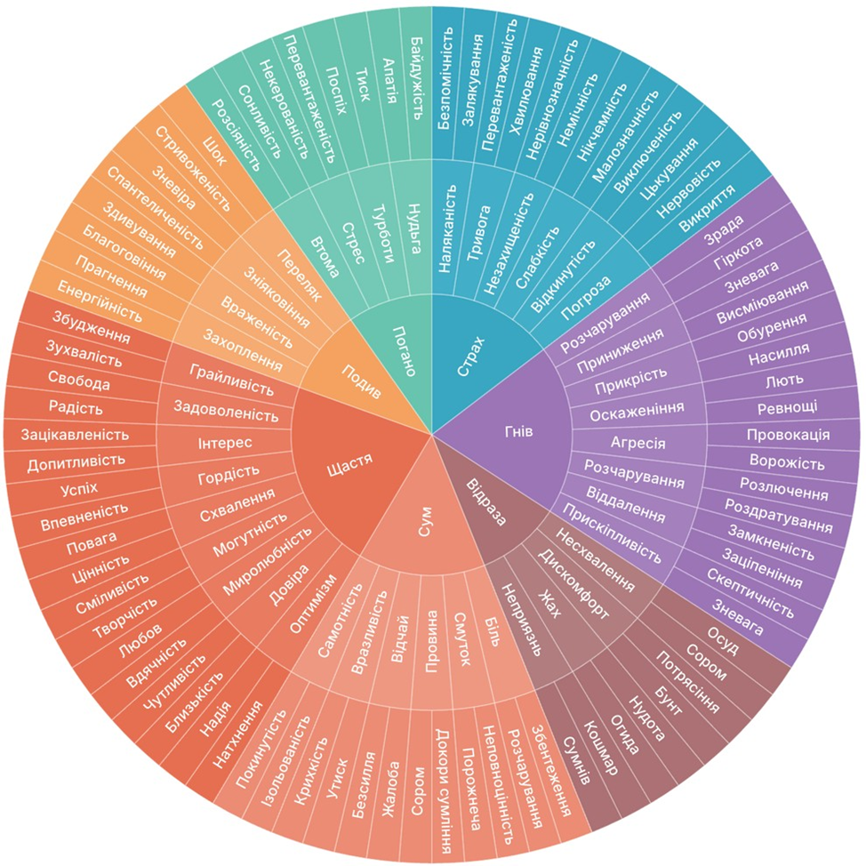

Інтерактивне Коло Емоцій: інструмент для поглиблення самосвідомості та психотерапевтичної практики
Розуміння та точна ідентифікація власних емоцій - це основа емоційної регуляції, відновлення стійкості та ефективної роботи з травмою. Для багатьох клієнтів, і навіть фахівців у моменти високого навантаження, виразити свій внутрішній стан словами буває непросто.
Запрошуємо вас приділити декілька хвилин, щоб налагодити зв'язок із собою за допомогою інтерактивного Кола Емоцій.

Що таке Коло Емоцій?
Коло Емоцій - це простий, але потужний інструмент для підтримки ментального здоров'я, розроблений для розширення емоційного лексикону та покращення самоусвідомлення. Структура колеса рухається від базових емоцій у центрі, таких як сум, страх, гнів, радість, до більш тонких, нюансованих переживань на зовнішніх колах.
Чому це важливо для клієнтів?
- Розвиток алекситимічної стійкості: допомагає перейти від узагальненого «мені погано» до точного «я відчуваю відчуженість, безпорадність або розчарування».
- Зниження інтенсивності афекту: точне найменування емоції знижує реактивність мигдалеподібного тіла та задіює префронтальну кору, повертаючи відчуття контролю.
- Навігація під час стресу: інструмент пропонує інсайти, які допомагають ефективно керувати стресом та розпізнавати тригери до того, як вони призведуть до емоційного затоплення чи дисоціації.
Чим це корисно для клінічних психологів та травматерапевтів?
- Опора в експозиційній та соматичній роботі: полегшує процес локалізації та вербалізації емоцій під час опрацювання травматичних спогадів, зокрема у модальностях EMDR, ACT, TFACT чи КПТ.
- Інструмент для заземлення та саморефлексії: може використовуватися як домашнє завдання для клієнтів між сесіями або як вправа для психотерапевта для профілактики втоми від співчуття та емоційного вигорання.
Як використовувати Коло Емоцій вже зараз?
- Зробіть паузу та заземліться: зробіть глибокий вдих і зверніть увагу на фізичні відчуття у тілі.
- Зверніться до центру колеса: визначте базову категорію переживання, яке найближче до вашого поточного стану.
- Рухайтеся до зовнішніх країв: досліджуйте детальніші відтінки почуттів, поки не знайдете слово, яке максимально точно відгукується «тут і зараз».
- Легітимізуйте свій досвід: нагадайте собі, що будь-яка виявлена емоція є валідною сигнальною системою вашої нервової системи.
Спробуйте прямо зараз: надайте собі кілька хвилин спокою та дослідіть свій поточний стан за допомогою нашого інтерактивного Кола Емоцій.
Тож Коло Емоцій є високоефективним інструментом для подолання алекситимії та розвитку емоційної регуляції, який слугує містком між неусвідомленим соматичним дискомфортом і його чіткою вербалізацією. Завдяки нейробіологічному ефекту маркування емоцій точне найменування почуттів може допомагати знижувати реактивність мигдалеподібного тіла та активувати префронтальну кору, що дозволяє швидше опанувати афективний шторм, зменшити рівень тривоги та повернути відчуття суб'єктності.
У клінічній та психотерапевтичній практиці фахівцям рекомендується активно інтегрувати Коло Емоцій на етапі стабілізації та підготовки до опрацювання травматичного досвіду, поєднуючи пошук слів із соматичними маркерами та заземленням. Важливо навчати клієнтів нормалізувати та валідувати складні, суперечливі переживання з різних секторів колеса, спираючись на позицію допитливості замість уникнення.
Для клієнтів практична рекомендація полягає у дотриманні алгоритму «Пауза - Пошук - Прийняття»: під час емоційного напруження спочатку зробити заземлюючий вдих і видих, а потім рухатися від базових категорій у центрі до зовнішніх країв колеса для знаходження найбільш точного відтінку стану. Систематичне ведення щоденника самоспостереження за допомогою цього інструменту 1-2 рази на день допомагає помічати власні тригери, розвивати емоційну гнучкість і поступово виходити з режимів дисоціації чи експерієнційного уникнення.
Пам'ятка: алгоритм «Пауза - Пошук - Прийняття»
Швидка самодопомога та заземлення під час емоційного напруження.
Пам'ятайте: будь-яка емоція - це лише валідна сигнальна система вашої нервової системи. Вона має початок і кінець.
1. Пауза: заземлення
- Зробіть повільний вдих та подовжений видих.
- Відчуйте опору: поверніть увагу до стоп на підлозі або до спинки крісла.
- Зверніть увагу на тіло: де саме живе напруження прямо зараз?
2. Пошук: ідентифікація
- Зверніться до Кола Емоцій: знайдіть базову емоцію в центрі - сум, страх, гнів, радість тощо.
- Рухайтеся до зовнішнього краю: деталізуйте відтінок, наприклад не просто сум, а самотність або безпорадність.
- Дайте цьому ім'я: «Я помічаю, що зараз відчуваю...».
3. Прийняття: валідація
- Скажіть собі: «Це нормально та природно - відчувати це у моїй ситуації».
- Змініть критику на допитливість: замість уникнення чи оцінки просто спостерігайте за почуттям, як за хвилею.
- Дайте собі простір: «Я можу витримати цю емоцію без поспіху її прогнати».